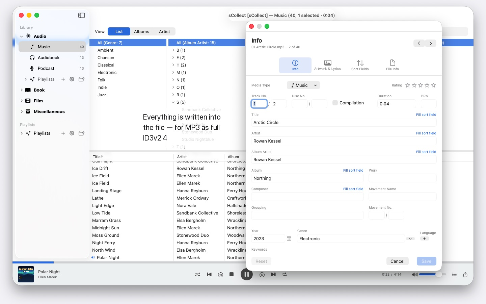
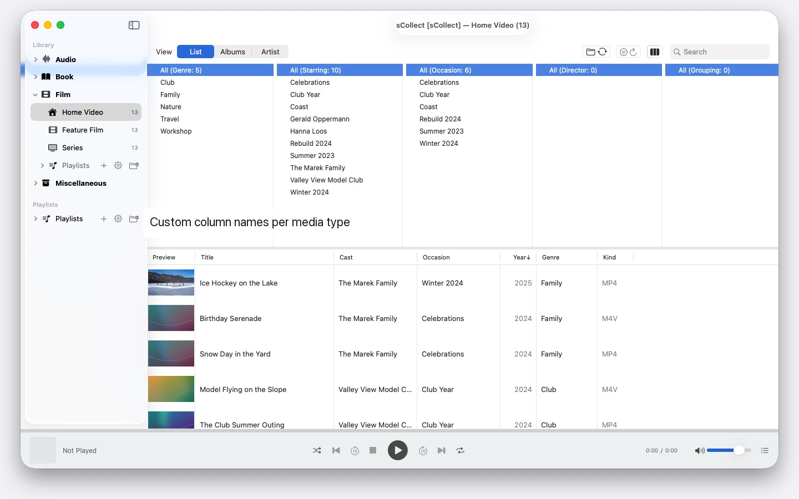
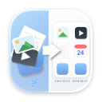

Thousands of artists, several Macs, any macOS from 14 on: sCollect organizes music, films and books and writes your details into the files. No account, no cloud.


sCollect is a library for everything worth collecting: music, films, home videos, audiobooks, podcasts and e-books — and for things that aren’t media files at all, such as coins or stamps, photographed and described. What the categories are called is up to you.
What sets it apart from an ordinary catalog: sCollect writes back. What you type into the editor doesn’t just land in a database, it lands in the file’s own metadata. Your work stays with you even if you stop using sCollect one day.
ORDER THAT TAKES CARE OF ITSELF
As it imports, sCollect puts every file where it belongs — by media type, artist, album or date, whichever you have set. Each media type may have a folder of its own, on a different drive if you like: films on the big external disk, music on the fast internal one.
If you would rather leave your collection where it is, link it instead. Linked files are never touched.
FOR PHOTOS AND FOOTAGE
If you shoot photos or video, you set a media type to store by date: on import, files land in year and month folders, and the file name carries the capture time, read from the file itself — for videos with a note when the camera leaves out the time zone. Camera prefixes like IMG_ disappear from the title if you wish, an ISO date is added, and the list and the disk sort the same way.
METADATA THAT REACHES THE FILE
One editor for a single item, a second for many at once. Both write in the format the file brings with it — ID3v2.4 in MP3, the tag structure of MP4 and M4A, Vorbis comments in FLAC and OGG, the text chunks of AIFF and WAV, DSF for DSD recordings, EXIF, IPTC and XMP in images.
Where a format has no field for something, or a file is copy-protected, sCollect puts a sidecar file next to it rather than lose the entry. If the file differs from the library, the editor tells you before you overwrite anything.
WHAT SHORTENS THE WORK
- Find and replace across every field, with a preview before the change
- Duplicate detection across a whole category, with a clear verdict on which version is better
- A column browser like the one in a music app, with multiple selection per column. Thousands of artists without endless scrolling: grouped by initial letter, A, AB, ABB – three clicks to get there
- Playback for audio and video, with playlists and a remembered position
FINDING MISSING FILES INSTEAD OF HUNTING FOR THEM
One pass marks every entry whose file is no longer there, and remembers the result. A view of its own shows just those entries and ticks off what you have linked up again.
SEVERAL MACS, ONE COLLECTION
A library can register copies. What you change in the main library is carried over afterwards into every copy it can reach, files and tags included. If a copy is offline, the change waits and is made up as soon as it is back.
Whichever macOS each Mac runs makes no difference: a Mac with macOS 14 and one with macOS 26 read the same collection, and no system update converts it. The copies are not a backup, though.
IMPORT AND EXPORT
Existing collections come in through the iTunes XML, ratings and playlists included. They go out as sCollect-XML — lossless, for moving and for safekeeping — as a playlist for Apple Music, or as iTunes XML.
ON YOUR MAC, AND NOWHERE ELSE
No accounts, no cloud, no analytics, no advertising. sCollect works only with the folders you give it.
That is also why sCollect doesn’t rip CDs or fetch track information from the internet — Apple Music already does both. Rip the CD there as AAC, Apple Lossless or MP3, and the files bring their track information with them into sCollect. That way, no service learns what you collect or how you organize it.
In 25 freely selectable languages, each with complete help.
Languages: English, German, French, Spanish, Italian, Portuguese (Brazil), Dutch, Swedish, Norwegian, Finnish, Polish, Czech, Croatian, Hungarian, Romanian, Turkish, Russian, Ukrainian, Persian, Thai, Japanese, Korean, Chinese (Simplified, Traditional, Taiwan).
- Requires macOS 14 or later
- 25 languages
- Support: SwiftAppsBavaria@gmx.net
More Apps

SwiftRename
Rename files in batches — by capture date, numbered consecutively, or sorted straight into year and month folders.
sVectorLift
Open, view, and save old vector clip art as SVG — CorelDRAW, Windows Metafile, and CGM.
sName2Date
Write the date from the file name into photos, movies, and audio recordings as the capture date — so that a file like IMG_20240115_103000.jpg is sorted correctly in any photo manager. The image and movie data stay untouched; PDFs and other files without a capture date get the file dates, and if desired, the name is put into ISO notation as well. Entire folder trees at once, and every run can be taken back with ⌘Z.
sName2Date Lite
The edition for one file per run: write the date from the file name into a photo, a movie, or an audio recording as the capture date, set it by hand, put the name into ISO notation, and take everything back with ⌘Z — the same capabilities as sName2Date, just without entire folders.
sCollectPlay
The player for the media library: play music, movies, audiobooks, and podcasts simply from a folder, an iTunes XML file, or an sCollect library — the files’ tags stay untouched. With playlists, audio and subtitle tracks, and for movies, slow motion and frame-by-frame stepping. Anything macOS can’t play on its own, such as MKV, AVI, or DSD, is handed off to an external player.
sCollectPlay Lite
The lean edition of sCollectPlay: simply open a folder, an iTunes XML file, or an sCollect library and play music, movies, audiobooks, and podcasts from it — with playlists, audio and subtitle tracks, slow motion, and frame-by-frame stepping. One source per session; the column browser, custom playlists, and recently used sources are reserved for the full version.
sBikeBridge
Analyze bike rides without uploading them to a portal: import FIT files from any bike computer that records in this format, plus GPX and TCX. Rides are kept in a dedicated library on the Mac — with map, power and heart rate, photos, and notes; the import detects duplicates. Stats by year or month and filters by distance, elevation gain, and duration make rides comparable. The map is also available offline if desired.